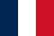

Najwyższe budowle wolno stojące
Na początek warto wiedzieć czym jest budynek i budowla oraz czym różnią się od siebie te pojęcia. Budynkiem jest obiekt budowlany, który jest trwale związany z gruntem, wydzielony z przestrzeni za pomocą przegród budowlanych, posiadający fundament oraz dach. Tymczasem budowlą jest po prostu obiekt budowlany, który nie jest budynkiem. W dalszej części strony zostaną zaprezentowane i opisane oprócz budynków takie budowle jak kominy, słupy, wieże itp.

Więcej informacji
| Lp. | Nazwa | Miasto | Kraj | Wysokość w metrach | Typ budowli | Rok ukończenia budowy | Ciekawostki |
|---|---|---|---|---|---|---|---|
| 1. | Burj Khalifa | Dubaj | 829,8 | wieżowiec | 2009 |
Najwyższa budowla na świecie, zbudowana przez przedsiębiorstwa:
|
|
| 2. | 1 World Trade Center | Nowy Jork | 541 | 2014 | Najwyższa budowla w USA | ||
| 3. | Empire State Building | 448,7 | 1931 | Najwyższy wieżowiec w latach 1931-1972 | |||
| 4. | KVLY/KTHI TV Mast | Blanchard | 628,8 | maszt radiowy | 1963 | Najwyższy maszt telewizyjny | |
| 5. | Komin elektrowni GRES-2 | Ekibastuz | 419,7 | komin | 1987 | Najwyższy komin świata | |
| 6. | Trboveljski dimnik | Trbovlje | 360 | 1976 | Najwyższy komin w Europie | ||
| 7. | Shanghai Tower | Szanghaj |  |
632 | wieżowiec | 2015 | Inwestorzy oraz wykonawcy:
|
| 8. | Abradż al-Bajt | Mekka | 601 | 2011 | Największy wieżowiec pod względem powierzchni | ||
| 9. | Varso Tower | Warszawa | 310 | 2022 | Najwyższy wieżowiec w UE | ||
| 10. | Petronas Towers | Kuala Lumpur | 452 | 1998 | Wynajmowane są w niej biura firmom takim jak:
|
||
| 11. | Hotel Ryugyŏng | Pjongjang | 330 | Brak planowanego terminu | Jego budowa stanęła na ponad 16 lat | ||
| 12. | Lotte World Tower | Seul | 555,7 | 2017 | Najwyższy budynek w Korei Południowej | ||
| 13. | Q1 Tower | Gold Coast | 323 | 2005 | Najwyższy budynek mieszkalny | ||
| 14. | Wieża Eiffla | Paryż |  | 324 | wieża | 1889 | Symbol Paryża, architekci:
|
| 15. | Tokyo Skytree | Tokio | 634 | 2012 | Najwyższa wieża świata | ||
| 16. | Riga Radio & TV Tower | Ryga | 368,5 | 1987 | Najwyższa wieża w UE | ||
| 17. | Wieża telewizyjna Ostankino | Moskwa | 540 | 1967 | Najwyższa budowla w Europie | ||
| 18. | Berliner Fernsehturm | Berlin |  |
368 | wieża telewizyjna | 1969 | Znajdują się w niej:
|
| 19. | Pylon w Jiangyin | Jiangyin | |
347 | wieża | 2003 | Najwyższy słup energetyczny |
| 20. | Kijowska wieża telewizyjna | Kijów | 385 | 1973 | Najwyższa kratownicowa, stalowa wieża świata |